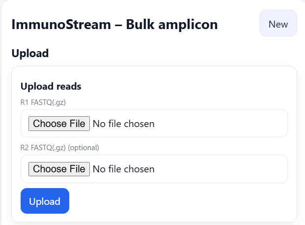
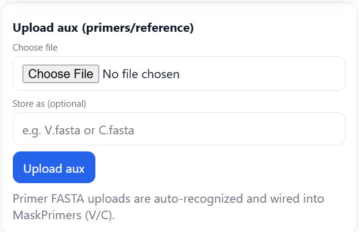
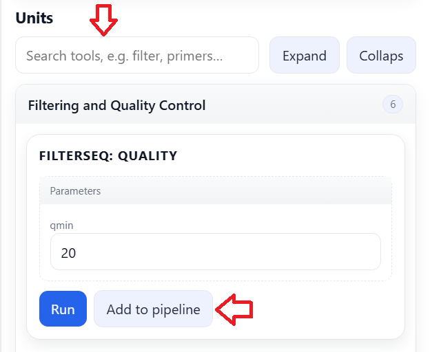
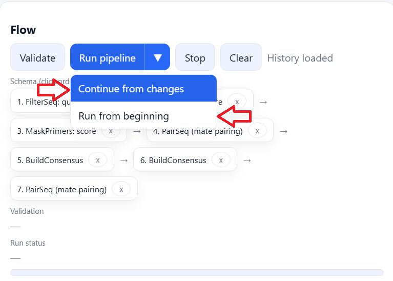
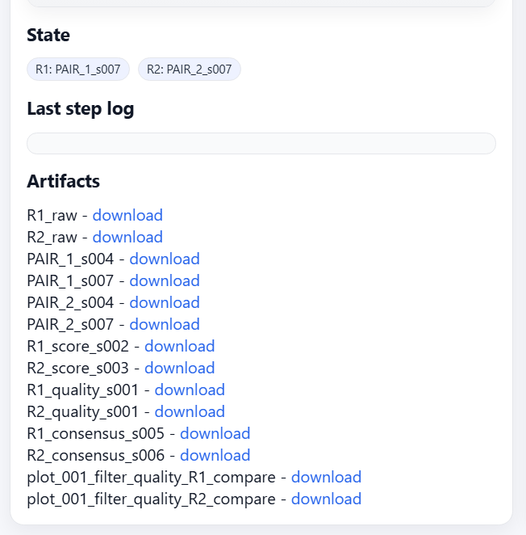
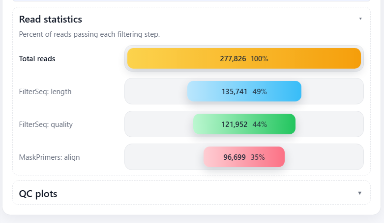
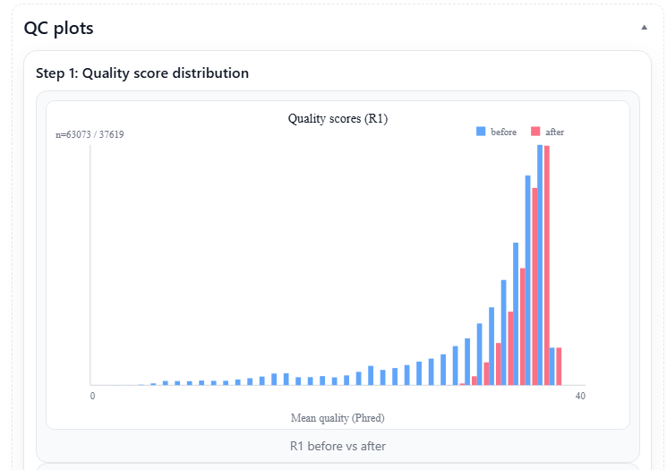

Overview
ImmunoStream is a web-based workbench for preprocessing Adaptive Immune Receptor Repertoire (AIRR) data.
It allows users to construct an ordered, click-based preprocessing pipeline for:
- Bulk amplicon sequencing data (FASTQ format)
- Single-cell AIRR data (TSV format)
The interface guides users through sequential preprocessing steps while preserving reproducibility and session history.
Account Creation and Login
Access the Login page to create an account or sign in.
Create an Account
- Provide a username
- Choose a password (minimum 6 characters)
Sign In
Use your registered credentials to access:
- Saved sessions
- Pipeline history
- Previously generated outputs
Bulk Tutorial (pRESTO Workflow)
This workflow is designed for preprocessing bulk amplicon AIRR sequencing data using pRESTO-based modules.
1. Upload reads
Upload your raw sequencing files:
- R1 FASTQ (.gz) - required
- R2 FASTQ (.gz) - optional (for paired-end pipelines)
Compressed FASTQ files (.fastq.gz) are supported and recommended.

2. Upload Auxiliary Files (Primers / References)
Upload required auxiliary files before adding dependent units to the pipeline.
Typical inputs include:
- Primer FASTA files (for MaskPrimers)
- Reference FASTA files (if required by selected units)
If the "Store as" field is left empty, the original filename will be used internally.
Ensure that primer files are consistent with your experimental design (5' / 3' orientation and expected binding positions).

3. Add Units to the Pipeline
Construct your preprocessing flow using modular units.
- Use the Units search bar to locate tools.
- Click Add to pipeline to append a unit.
- Units are executed in the exact order they are added.
The flow is explicitly ordered and reflects your click sequence, enabling reproducible preprocessing configurations.

4. Validate and Run
Validation
Click Validate to check:
- Primer file dependencies
- BARCODE usage and compatibility
- Required inputs for selected units
Validation ensures that all mandatory upstream resources are available before execution.
Execution
Click Run pipeline to start processing.
Available run modes:
- Continue from changes
Appends newly added steps without rerunning previous units. - Run from beginning
Resets the workflow and executes the full pipeline from the first unit.
Choose the mode according to whether upstream modifications were introduced.

5. Review Outputs
After execution, results can be inspected through multiple panels:
- State
Displays current data channels (R1 / R2) and their status. - Log
Shows the most recent command-line output for transparency and debugging. - Artifacts
Provides downloadable output files generated by each unit. - Read Statistics
Summarizes filtering impact across steps. - QC Plots
Visualizes read retention, trimming, and quality evolution across the pipeline.
These outputs allow users to evaluate preprocessing efficiency and track data loss across sequential steps.



Bulk Units Reference
This section describes the available preprocessing units in the Bulk (pRESTO-based) workflow. Units are organized by functional category.
Filtering and Quality Control
FilterSeq: quality
Removes reads failing a minimum base quality threshold and generates QC plots.
Purpose: eliminate globally low-quality reads before downstream processing.
FilterSeq: length
Removes reads shorter than a specified minimum length.
Purpose: ensure sufficient sequence length for reliable primer detection and downstream annotation.
FilterSeq: missing
Removes reads containing excessive ambiguous bases (e.g., N).
Purpose: eliminate reads with unreliable base calls.
FilterSeq: repeats
Filters low-complexity reads (e.g., homopolymer-rich sequences).
Purpose: remove sequencing artifacts and non-informative reads.
FilterSeq: trimqual
Trims low-quality ends using a sliding-window approach.
Purpose: retain high-quality core regions while removing noisy read termini.
FilterSeq: maskqual
Masks low-quality bases (e.g., replacing with N) instead of removing entire reads.
Purpose: preserve read count while marking unreliable positions.
Primer Processing
MaskPrimers: score
Detects and masks primers using score-based matching.
Characteristics: fast, suitable for well-defined primer sets, less sensitive than alignment-based matching.
MaskPrimers: align
Detects and masks primers using alignment-based matching.
Characteristics: most sensitive, recommended when primer variability is expected.
MaskPrimers: extract
Extracts a fixed-length sequence region relative to detected primers.
Purpose: isolate the biologically relevant region (e.g., V(D)J segment).
Pairing and Merging
PairSeq (Mate Pairing)
Pairs R1 and R2 reads and optionally propagates annotation fields.
Purpose: reconstruct paired-end sequencing information before merging or downstream analysis.
Clustering and Consensus
CollapseSeq (Deduplication)
Deduplicates reads based on shared annotation fields (e.g., BARCODE or UMI).
Purpose: remove PCR duplicates and collapse identical molecular families.
BuildConsensus
Builds consensus sequences from read families sharing a common barcode or UMI.
Purpose: reduce sequencing errors and reconstruct high-confidence molecular sequences.
Single-Cell Tutorial
This workflow is designed for preprocessing single-cell AIRR data provided in tabular format (AIRR-compliant TSV files).
1. Upload AIRR TSV Files
Upload one or more:
- .tsv
- .tsv.gz (compressed)
Files should follow the AIRR Rearrangement schema (recommended).
A processing session is created automatically upon successful upload.
Multiple files can be uploaded within the same session if they belong to the same experiment or batch.
2. Add Units to the Pipeline
Construct your processing flow using modular units.
Units are organized into the following categories:
- I/O and Merge: import, combine, or restructure tables
- QC and Filtering: apply quality thresholds or biological constraints
- Other: additional transformations and utility operations
Click Add to pipeline to append a unit.
Execution order strictly follows the order in which units are added.
The pipeline structure is explicit and reproducible.
3. Validate and Run
Click Validate to ensure that:
- Required input fields are present
- Dependencies between units are satisfied
- Output schema compatibility is preserved
Then click Run pipeline to execute the workflow.
After execution, review outputs through:
- State: current table structure and channel status
- Log: detailed execution messages for traceability
- Artifacts: downloadable result files
- QC Plots: visualization of filtering impact
- Read Statistics: summary metrics across steps
These panels allow inspection of data integrity and filtering effects at each stage of processing.
Single-Cell Units Reference
This section describes the available preprocessing units for single-cell AIRR TSV workflows.
I/O and Merge
Merge Samples (AIRR TSV)
Merges multiple AIRR TSV files into a single consolidated table.
Purpose: combine samples or batches while preserving cell-level structure and AIRR-compliant fields.
Ensure that input files follow a consistent schema before merging.
QC and Filtering
Keep Productive Sequences
Removes non-productive rearrangements.
Purpose: retain sequences that are in-frame and free of stop codons, suitable for downstream biological interpretation.
If a dedicated productivity field is not present, the unit can infer productivity from AIRR-compliant fields.
Remove Cells with Multiple Heavy Chains
Filters out cells containing more than one heavy-chain rearrangement.
Purpose: enforce canonical single heavy-chain pairing per cell (e.g., one IGH or one TRB).
This step is recommended when doublets or multiplets are suspected.
Remove Cells Without Heavy Chains
Removes cells that contain only light-chain rearrangements.
Purpose: retain biologically interpretable B cells with at least one heavy chain (e.g., IGH) present.
This step helps ensure valid heavy-light pairing structure in BCR datasets.
Step-by-Step Pipeline
1. Upload sequencing reads
- R1.fastq.gz (required)
- R2.fastq.gz (paired-end)
2. Upload auxiliary file
- V_primers.fasta (primer definitions)
3. Add preprocessing units (in this order)
This table defines the parameterized execution order for a representative bulk workflow.
| Step | Command/Process | Parameters |
|---|---|---|
| 1 | Filter quality (R1) | n = 20 |
| 2 | Filter quality (R2) | n = 20 |
| 3 | MaskPrimer Score (R1) | ch = R1, -p = AbSeq_R1_Human_IG, start = 0, mode = cut |
| 4 | MaskPrimer Score (R2) | ch = R2, -p = AbSeq_R2_TS, start = 17, --barcode enabled, mode = cut, maxerror = 0.5 |
| 5 | PairSeq | -1 = R1, -2 = R2, --2f = BARCODE, coord = sra |
| 6 | BuildConsensus (R1) | ch = R1, bf = BARCODE, pf = PRIMER, prcon = 0.6, maxerror = 0.1, maxgap = 0.5 |
| 7 | BuildConsensus (R2) | ch = R2, bf = BARCODE, maxerror = 0.1, maxgap = 0.5 |
| 8 | PairSeq | -1 = R1, -2 = R2, coord = presto |
4. Validate the pipeline
- Confirm primer dependencies
- Ensure barcode fields are available
- Check channel consistency
5. Run the pipeline
Execute the workflow after validation completes.
6. Download outputs
- Retrieve processed FASTQ files and reports from the Artifacts panel.
Conceptual Flow
Filter quality (R1/R2) -> MaskPrimer score (R1/R2) -> PairSeq (barcode propagation) -> BuildConsensus (R1/R2) -> PairSeq (final pairing)
This workflow targets paired-end, barcode-aware bulk AIRR sequencing and prioritizes quality control, primer handling, and consensus accuracy.